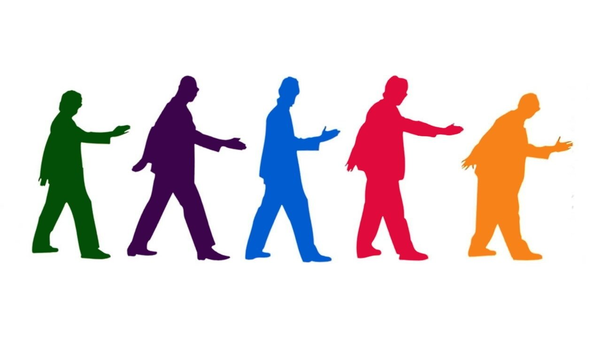
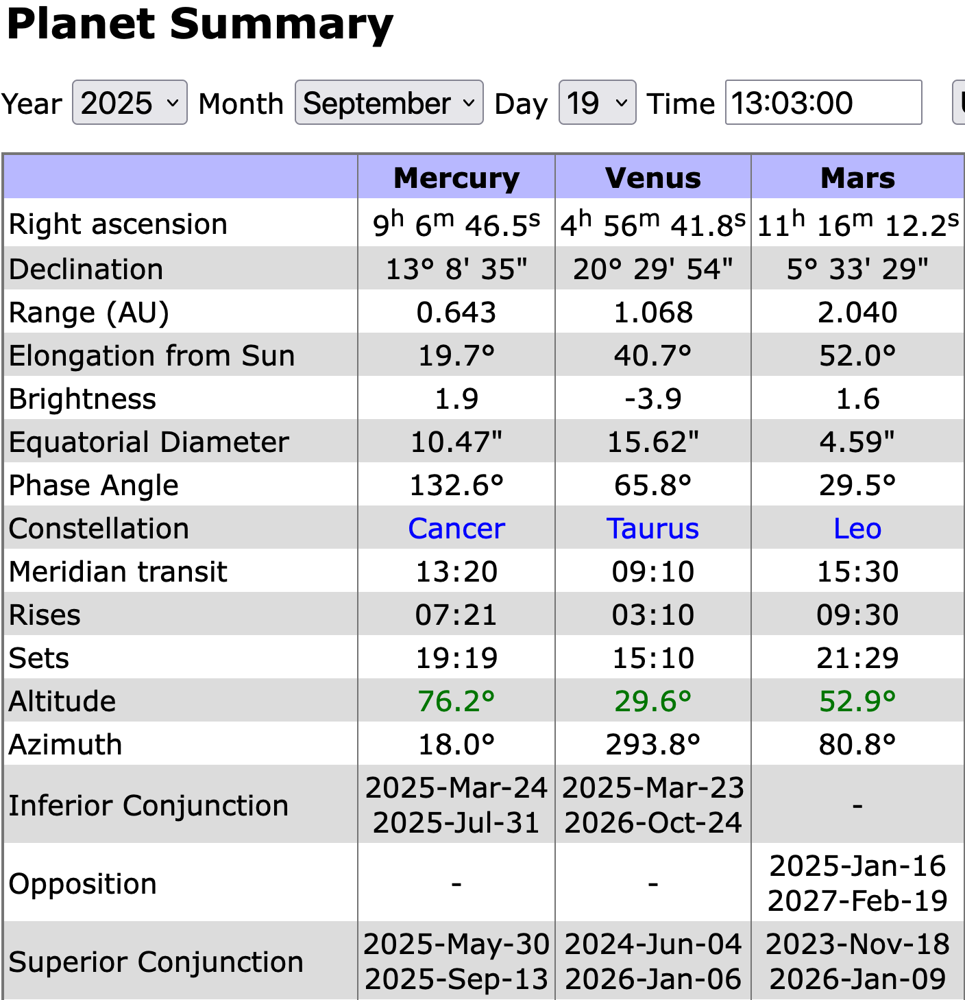
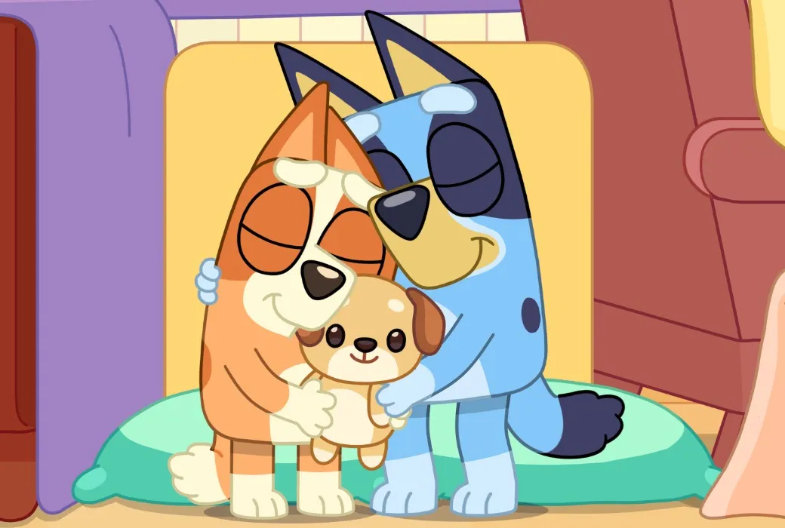
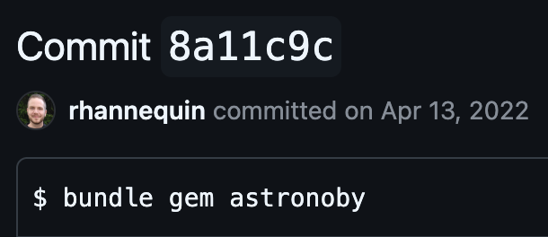
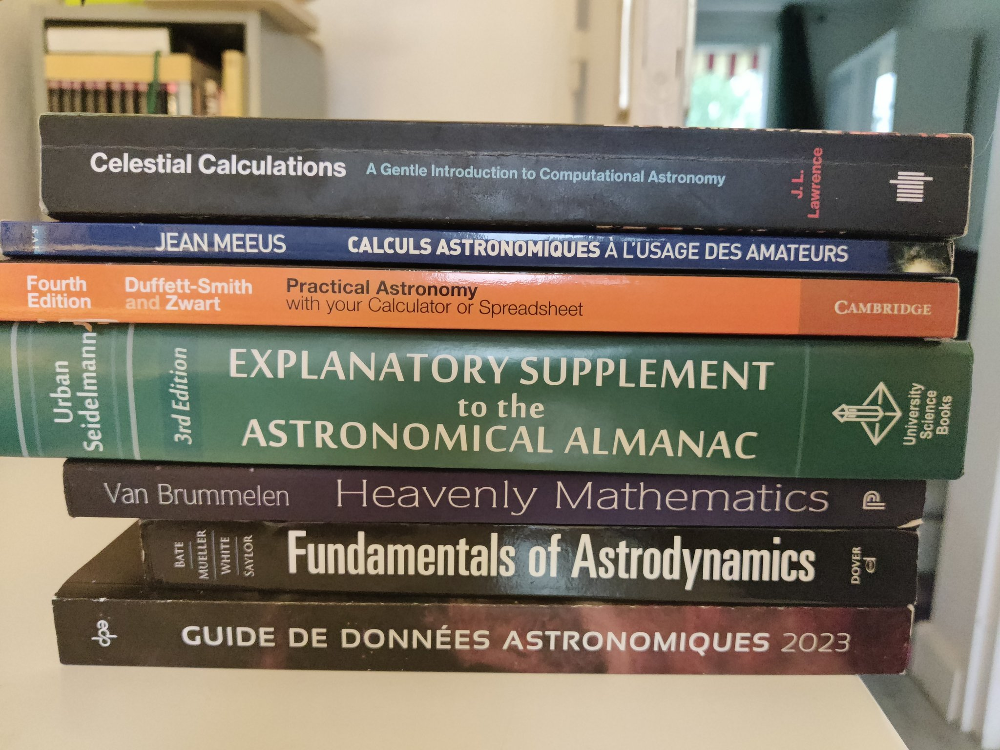
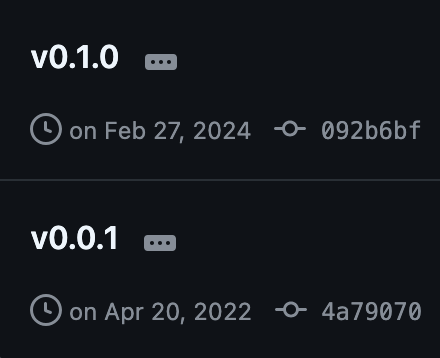
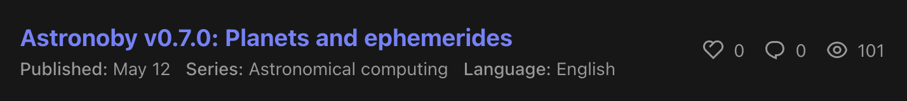
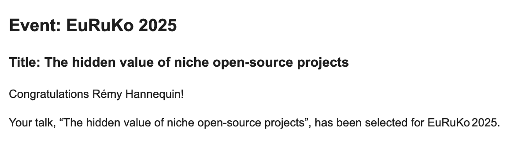
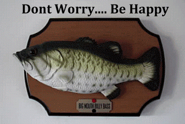
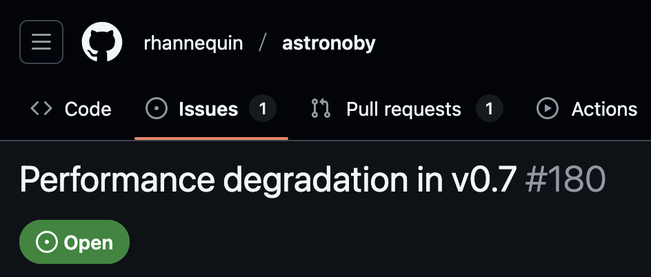

The hidden value of niche open-source projects
🗂️
/Users/rhannequin/code/ideas/
I'm wasting my time, nobody cares about this
Hi, I'm Rémy
@rhannequin
Senior developer at thoughtbot
Let's meet and talk
🪐🍔🤖💻🍿
What are we going to talk about?
- Tale of side projects
- Valley of despair
- A New Hope
- Unlocking the Treasure
Genesis

🪐 + 💻

Sharing is caring


mars = Astronoby::Mars.new(instant: instant, ephem: ephem)
topocentric = mars.observed_by(geneva)
horizontal = topocentric.horizontal
puts "Mars is #{horizontal.altitude.round(2)}°
high in the sky"


Who needs this?
I'm not doing this right
So much effort and no feedback

The unexisting value of niche open-source projects 🤡
Staying motivated
Work with passion
when passion is your work
Personal mission and challenge
Set up achievable goals 🎯
🎉Celebrate wins
Talk about it 💬
Look at what already worked
- Faker
- SQLite
- Cowsay
Unlocking personal and professional growth
Open-source best practices
Versioning, documentation, code quality
New technical skills
New relations, new clients, new job opportunities


I'm wasting my time, nobody cares about this
You are having fun
Who needs this?
You are not alone
You are the Ruby community

I'm not doing this right
You are doing it your way, an original way
So much effort and no feedback
Your efforts are paying in many unsuspected ways
Conclusion
There are many obstacles
If you love it, do it
There's so much to take on the way

What's next
- Open-source one project
- Add a README
- Share it
- Ask for feedback
- Ping me
cd /Users/rhannequin/code/
mv ideas projects